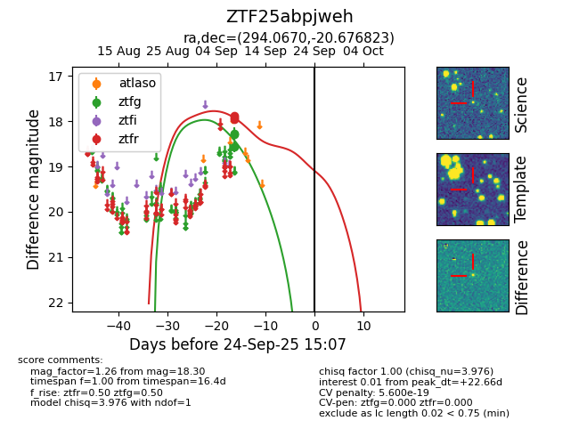
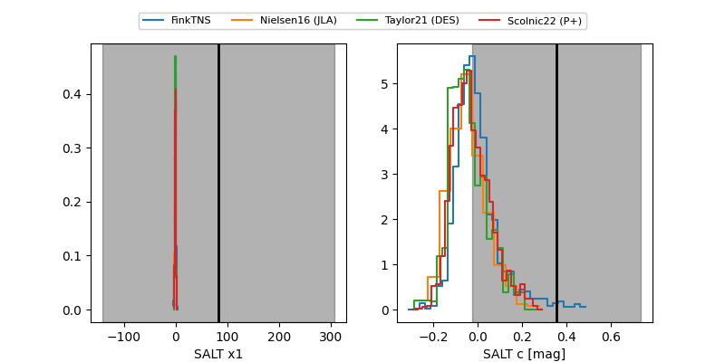

FINK: ZTF25abpjweh
Lasair: ZTF25abpjweh
ALeRCE: ZTF25abpjweh
ZTF25abpjweh (ztf,fink)
equatorial (ra, dec) = (294.0670,-20.67682)
galactic (l, b) = (18.7842,-18.83505)


last ztfg=18.30, ztfr=17.92
3 ztfg, 3 ztfr detections